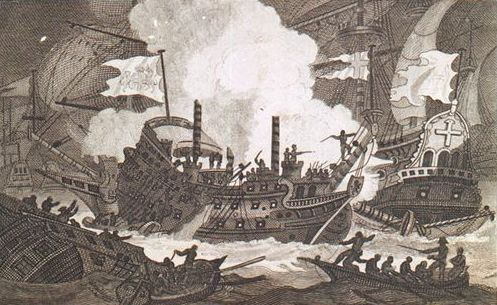
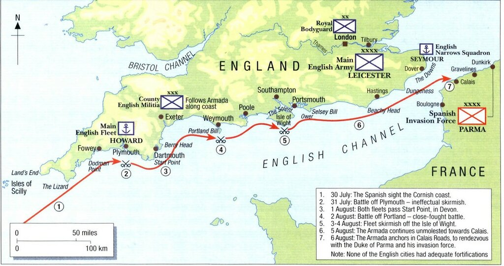
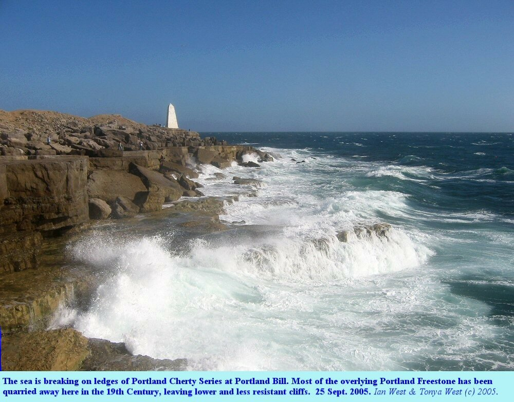
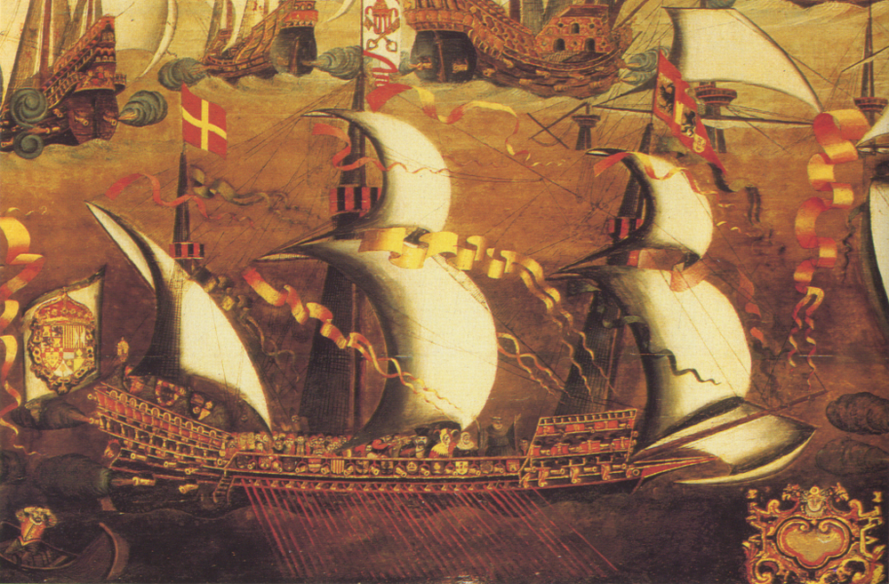

В прошлый раз мы наконец-то завершили затянувшееся примечание №8 к записям из Дневника солдата, относящимся к событиям первых двух дней (31 июля–1 августа 1588 года) непосредственных контактов между флотами Англии и Испании. Эти двое суток были отмечены спорадическими столкновениями и первыми потерями испанцев. Сейчас продолжим чтение этого интересного документа.
«На рассвете 2 августа ветер переменился на северо-восточный (nordeste) и мы оказались на ветре у противника (con q[ue] se le ganamos al enemigo); вражеские корабли, заметив это, изменили курс и начали отходить, преследуемые всеми кораблями нашей Армады, которые вели огонь, не давая англичанам поставить все паруса. Но когда ветер поменялся на юго-восточный, противник вновь оказался в наветренном положении и начал обстреливать нас. Огонь они вели по арьергарду и кораблю адмирала [Рекальде], который уже вернулся на позицию, занимаемую днем раньше, без какой-либо помощи со стороны других кораблей Армады, которые, как кажется, стремились один за другим поскорее сбежать. В конце концов все эти корабли вышли из боя и плотно, борт к борту, сгрудились друг с другом (se abordavan unas con otras); жалко об этом говорить. Продолжалось все это с рассвета до четырех или пяти часов пополудни, когда противник прекратил огонь по кораблю адмирала, вынужденному сражаться без какой либо помощи (как уже было сказано), за исключением поддержки со стороны дона Алонсо де Лейва, подошедшего с еще одним кораблем левантийской эскадры.»
Примечание №9. Мы помним, что флагманским кораблем левантийской эскадры дона Лейвы был галеон La Rata Santa Maria Encoronada. Вместе с Лейвой на помощь Рекальде подошел галеон Regazona, которым командовал Мартин де Бертендона, один из самых выдающихся испанских флотоводцев эпохи Непобедимой армады. Именно дон Мартин, командуя небольшим кораблем San Bernabé, захватил в 1591 году знаменитый английский галеон Revenge.

Захват галеона Revenge в бою у острова Флориш (Азорские острова) в 1591 г. ("Sir Richard Grenville's Gallant Defence of the Revenge", гравюра James Cundee, 1804) National Maritime Museum, Гринвич.
Сам Бертендона так вспоминает эпизод с оказанием помощи Рекальде:
Otro día, haviendo amanecido 18 naves inglesas sobre la del almirante real Juan Martínez de Recalde, que le tenían apretado, le socorrió el dicho general Bertendona tan gallardamente que los ingleses tubieron por bien de retirarse.
На рассвете следующего дня, когда 18 английских кораблей навалились на флагманский корабль адмирала Хуана Мартинеса де Рекальде, генерал Бертендона отважно бросился ему на помощь, так что англичане вынуждены были ретироваться.
‘Relación de servicios de Martín de Bertendona’, Lilly Library, Bloomington.
Примечание №10. Бросим более широкий взгляд на события, описанные в данном отрывке из Дневника солдата.
Самоволие и алчность Дрейка привели к тому, что английский флот за ночь с 31 июля на 1 августа оказался рассеян на большом пространстве и командование Непобедимой армады получило в качестве подарка 24 часа, которыми оно, однако, не смогло с толком распорядиться. Чтобы не потеряться в пространстве и времени, самое время привести еще одну схему передвижений испанского и английского флотов с привязкой к основным событиям и географическим точкам (схема взята из книги Angus Konstam, The Armada Campaign, 1588. Osprey. Campaign 86)

В середине дня понедельника 1 августа, когда ветер упал практически до штиля, герцог Медина-Сидония собрал очередной военный совет, где предполагалось определить новый боевой ордер, который в большей степени отвечал бы складывающейся обстановке. Было решено разделить все боевые корабли между двумя эскадрами: мощный арьергард под командованием дона Алонсо де Лейва (занявшего этот пост на период, пока Рекальде был занят приведением в порядок своего корабля) и меньший по составу авангард, командование которым принял на себя сам герцог. Именно в таком боевом порядке состоялось первое сражение между флотами противников, которое получило в дальнейшем название «Сражение у мыса Портланд Билл».

Уже в самых первых описаниях этого сражения у историков появились такие эпитеты, как «странное», «курьезное» и т.п. Например, известный английский историк Уильям Кэмден (1551-1623) в своем сочинении по истории Елизаветинской Англии («Annales Rerum Gestarum Angliae et Hiberniae Regnante Elizabetha») называет его «varioque Marte confuse pugnatur» (сражение, которое велось беспорядочно и с переменным успехом). Такая же оценка нередко встречается и у современных историков. Так, в исследовании «The Armada» (Garrett Mattingly) мы читаем такие определения, как «a curious battle», «the furious battle off Portland Bill», которые фактически повторяют оценки современников экспедиции Непобедимой Армады. Попробуем понять, чем этот день боев заслужил такие эпитеты.
Затишье на море, начавшееся в понедельник 1 августа, сохранялось практически и всю ночь с 1 на 2 августа. Лишь на рассвете свежий бриз с восточных румбов впервые дал преимущество в ветре испанцам. Оценив возникшую опасность, Чарльз Говард повел свои галеоны круто к ветру, курсом на северо-северо-восток, пытаясь просочиться между строем Армады и побережьем Англии. Однако Медина-Сидония предпринял контрманевр, и, используя выгодное положение своего авангарда относительно ветра, повел корабли на перехват. Говард понял, что он вряд ли успеет обойти Портланд Билл, и приказал своим кораблям лечь на обратный курс. По всей вероятности, лорд-адмирал рассчитывал спуститься на юго-юго-запад, с тем чтобы затем попытаться обойти обращенный к морю фланг испанской Армады с наветренной стороны. Но испанцы не дремали. Отряд из состава арьергарда Армады под командованием Мартина де Бертендона, лег на перехватывающий курс. Расстояние между ведущими кораблями двух враждебных сторон сократилось сначала до дистанции выстрела из кулеврины, затем до мушкетного выстрела, и продолжало стремительно сокращаться. Англичане, осознав, что они не смогут прорваться без боя, открыли артиллерийский огонь из всех своих орудий. Им тут же ответили с испанских кораблей. Обе эскадры окутал густой дым. Начавшийся беспорядочный бой продолжался более двух часов. И хотя никто из морских историков не смог ясно выделить главные намерения сторон в этой свалке, очевидно, что англичане стремились прорваться на ветер, а испанцы искали возможность наконец-то воспользоваться преимуществом своих тяжелых и высоких кораблей с большим числом десанта на борту и навязать противнику абордажный бой. Вот, к примеру, как повел себя самый крупный корабль обоих флотов, испанского и английского, нава «Регасона» (Regazona), которой командовал, как мы уже знаем, Мартин де Бертендона (корабль был построен в Венеции, имел грузоподъемность 1067 ¾ тонелад (toneladas) и был вооружен 32 бронзовыми орудиями). «Регасона» попыталась выйти на ветер к крупному английскому галеону (некоторые источники полагают, что это был флагманский Revenge), но в результате англичанину удалось увернуться и уйти мористее.
Практически одновременно с этим событием, которое развертывалось на удаленном от английского берега фланге, произошло еще одно боевое столкновение, на этот раз на противоположном фланге. Когда на рассвете англичане пытались просочиться между Армадой и английским берегом, часть их кораблей, в основном вооруженные купеческие корабли средних размеров из лондонской эскадры, застряли у берега, потеряв ход из-за слабого ветра. Единственный несомненно сильный корабль в этой группе – флагман лондонской эскадры мощный галеон Triumph, самый крупный корабль английского флота под командованием известного уже нам Мартина Фробишера. Герцог Медина-Сидония посчитал, что испанцы получили золотой шанс открыть счет побед над англичанами. Он направил дона Уго де Монкада во главе отряда из четырех неаполитанских галеасов, для которых отсутствие ветра не было помехой, чтобы разобраться с легкой добычей.

Галеас из состава испанской Армады. Анонимный художник. Музей Гринвича.
Сам Уго де Монкада находился на галеасе San Lorenzo. Галеасы подошли уже практически вплотную к английским кораблям, когда попали в течение, которое отнесло их в сторону. Несмотря на отчаянные усилия гребцов, знаки неудовольствия, выказанные герцогом Медина-Сидония в адрес де Монкада через офицера по особым поручениям, прибывшего на пинасе, ни одному из четырех галеасов не удалось преодолеть силу приливного течения Portland Race, о котором хорошо знали англичане и не имели никакого понятия испанцы. Да и если бы знали, вряд ли смогли применить эти знания: течение ведет себя непредсказуемо ни во времени, ни по направлению (вот его характеристика в современных изданиях: This dangerous period lasts nine hours. Streams are not entirely predictable outside a couple of cables offshore). В нашем случае судьбой было назначено, чтобы оно послужило на пользу англичанам. Для любителей разбираться с деталями досконально привожу карту течений Portland Race (кликабельно):
Герцог направил на борт флагманского галеаса очередного порученца с посланием дону Уго де Монкада, которое начиналось словами: «Какой прекрасный был день. И если бы галеасы сделали свою работу, которую я от них ожидал, он мог бы плохо кончиться для противника». Ну и далее – укоры и упреки.
Впрочем, неудачная атака галеасов быстро отошла на второй план после того, как ветер снова переменил свое направление. Чарльз Говард тут же повел свои самые сильные галеоны строем кильватерной колонны к центру испанского авангарда, где находился флагман Армады San Martin. Лорд-адмирал вспоминал позже, что испанцы начали отступать и сбиваться в кучу как овцы ('the Spaniards were forced to give way and flock together like sheep'). Это почти полностью повторяет оценку, данную Рекальде в Дневнике солдата. Англичане приблизились к испанскому флагману и начали вести огонь, проходя поочередно, один галеон кильватерной колонны за другим. Сан Мартин вел ответный огонь, ответив на 500 ядер противника своими восемьюдесятью. Флагман получил небольшие повреждения корпуса и такелажа, но ввиду того, что огонь велся на пределе досягаемости корабельной артиллерии, а корабли были окутаны плотным облаком порохового дыма, что препятствовало точному прицеливанию, серьезного урона не понесла ни одна из сторон.
А между тем, положение Армады оставалось крайне неопределенным. Медина-Сидония не получил ответа на свое послание, направленное во Фландрию Алессандро Фарнезе, герцогу Пармы, в котором спрашивал о готовности находящихся под его командованием войск к переправе через Ла-Манш. Требовалась также коррекция боевых порядков испанского флота, так как прежние инструкции уже не соответствовали тактике англичан. Но об этом мы поговорим в следующий раз.